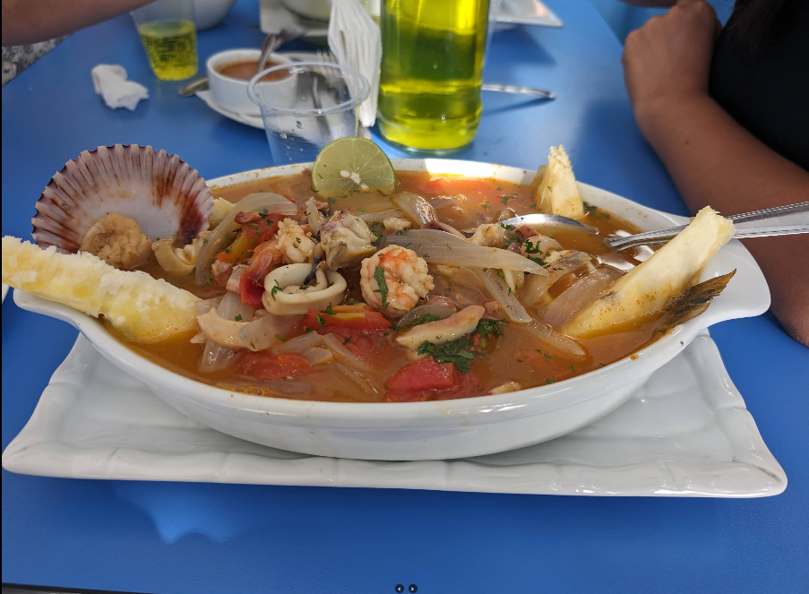
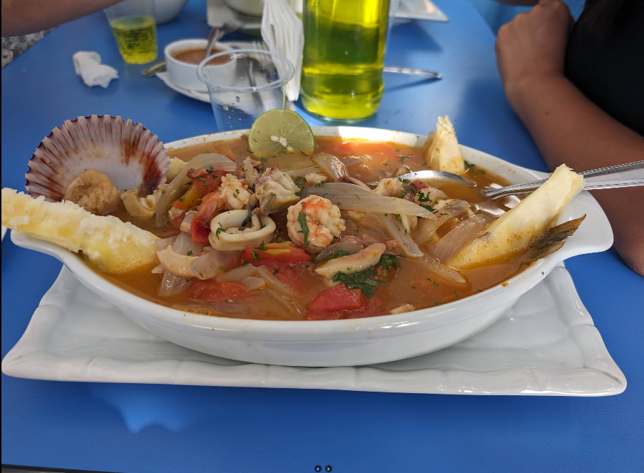

Nuestra Historia
Hace más de diez años, “El Anzuelo de Ofelia” comenzó como un pequeño puesto en un mercado local. Ofelia, una mujer apasionada por la gastronomía marina, junto con sus hijos, trabajaban incansablemente desde temprano, preparando mariscos frescos con recetas familiares. Aunque el espacio era pequeño y los recursos limitados, el amor por la cocina y el deseo de salir adelante los impulsaban a dar siempre lo mejor.
Los primeros años estuvieron llenos de desafíos: largas jornadas, competencia y la incertidumbre de hacer crecer un negocio familiar. Sin embargo, gracias a la perseverancia, la unión familiar y el apoyo de sus clientes fieles, fueron venciendo cada obstáculo. Su dedicación se reflejaba en la calidad de sus platillos, y poco a poco su reputación creció dentro de la comunidad.
Hoy, “El Anzuelo de Ofelia” es un restaurante consolidado, símbolo del esfuerzo y la pasión de una familia que no se rindió. Este lugar se ha convertido en un espacio donde la tradición culinaria marina se disfruta con orgullo, recordando siempre que con trabajo y esperanza, cualquier sueño puede convertirse en realidad.
 
